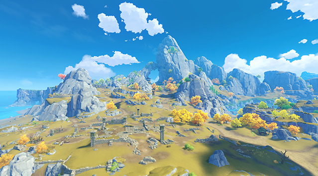
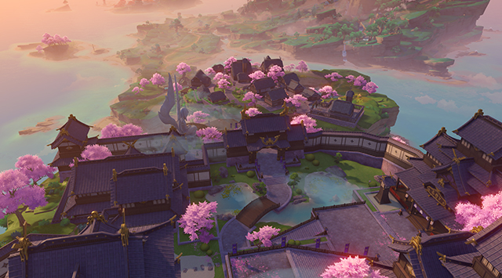
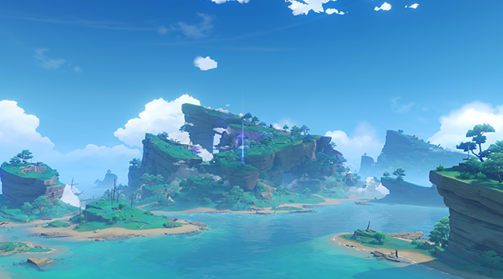

这里是七种元素交汇的幻想世界「提瓦特」。
在遥远的过去，人们藉由对神灵的信仰，获赐了驱动元素的力量，得以在荒野中筑起家园。
五百年前，古国的覆灭却使得天地变异…
如今，席卷大陆的灾难已经停息，和平却仍未如期光临。


位于提瓦特大陆东北部的自由城邦。
群山和广袤的平原间，自由之风携着蒲公英的气息吹拂过果酒湖，为坐落于湖心岛上的蒙德城送去风神巴巴托斯的祝福与恩泽。
蒙德
环绕蒙德城的天然淡水湖泊。
宽广的湖面和粼粼的波光历经千百年不变，水澈见底，入口清冽甘甜。正是这样的水源成就了蒙德美酒的盛名，也让果酒湖成为了蒙德的重要标志之一。

从风起地往东延伸至海边，鹰翔海滩与誓言岬共同围成三面环海的陆地，环绕着蒙德东面的海湾。
鉴于海岸线较长且地处浅海位置，经常有蒙德市民前来游玩。偶尔可见苍鹰翱翔于碧浪白沙之上。

位于蒙德城东南角、风啸山坡边缘的海岬。
传说曾有一对恋人在此许下誓言，并留下一个感人至深的故事。至今此地仍被认为是恋人的好去处。
除了观看海上日出日落外，由于地势的落差，在这里也可以轻松望到海湾对面的风起地。

位于蒙德城西南方的晨曦酒庄，代代传承着蒙德传统的酿酒工艺。
这里种植着大面积的葡萄等作物，用它们酿造出的各类酒品风靡整个提瓦特大陆。
每年晨曦酒庄产出的酒品，部分运往蒙德城内销售，另一部分则通过城南的商道销往各地。

蒙德地区南部的悠闲小镇，与蒙德主城隔湖相望。
此地居民多以打猎为生，常年为蒙德城内的各大餐馆提供优质鲜肉。
清泉镇以其小镇情调和乡间野趣，吸引着前来观光的游客。如果在旅途中有幸遇到某位擅长肉类料理的大厨，或许还能体验到一段别样的惊喜。

地处蒙德东北部的神殿遗址群。
据人们传言，千百年前这里曾是供奉古代风神的神庙，如今被漫长的时光侵蚀，只剩残存的建筑废墟。一些石质立柱上还依稀可辨认出曾经华丽雕刻的精妙曲线。
所纪念的象征早已被遗忘的石雕上雕刻着一句古老的格言，「风带来故事的种子，时间使之发芽。」


位于提瓦特大陆东方的富饶港湾。
傲然矗立的山麓与石林、广袤的平原与生机勃勃的河滩共同构成了璃月的丰富地貌，在四季分明的气候下焕发出多彩的风华。山石奇景间，又埋藏了多少岩之魔神的古老馈赠等待着人们发掘呢？
璃月
港口的建立为璃月的海上贸易打下了最初的基础。作为提瓦特大陆上最大的集贸港口，其货物吞吐量也绝非一般港口可比拟。
每年海灯节时，在港口处可以看到海上万千宵灯飞入夜幕，是到访璃月不可错过的奇景。

璃月港西边的山脉，也是抵御外敌的一道天然保护屏障。
有记载以来，作为璃月的壁垒经历了数不清的大小战争，因此也可以看到不少古城墙、堡垒和防御工事的遗迹。
传说中璃月人最早的采矿作业亦在此处进行。

荻花洲得名于浅滩中大面积生长的荻花，是璃月北部的一处天然浅滩湿地。
水泽遍布、河网交错纵横，由多样的动植物群落组成了丰富的生态系统，也构成了来往旅客眼中绝佳的景观。
同时，荻花洲也是陆路从蒙德通往璃月的必经要道，因此时常有商队在此歇脚。建在河滩深处的望舒客栈是这里的标志性建筑。

荻花洲的地标，修建在一座巨大岩柱上的客栈。
来歇息的大多是途径此处的商贩，客栈也因此提供了直接贸易和摆摊的场所。高层位置视野极佳，天气晴朗时可以直接看到远处的轻策山和绝云间。
坊间有传说道，在高耸的客栈中，传承着某种神秘的使命。但传言止步于此，从未有人能证实它的真伪。

坐落于璃月最北部，隐藏在山丘与竹林间的村落。
白云缭绕的山谷间点缀着鳞次栉比的半月形梯田，山风吹拂时可以看见一层层多彩的波浪。
在这个宛如世外桃源的地方，轻策庄的村民过着质朴而又充实的生活。

璃月西北部常年云雾缭绕、渺无人烟的峻岭。
山间有奇景，但由于地势复杂、山路陡峭而鲜有人迹，传闻中是守护璃月的仙人们的隐居之处。也因此受到部分求仙祈福之人的追捧。
鉴于其间的凶险不宜外人靠近，最好还是站在望舒客栈远观吧。


位于提瓦特大陆远东的封闭群岛。
越过无尽的雷暴，踏上红枫与绯樱眷顾的诸岛，在环绕的砂堤、高耸的断崖与幽秘的山林之中，见证御建鸣神主尊大御所大人所追寻的永恒。
稻妻
在锁国令期间，若想真正踏上鸣神的领土，就必须先通过离岛这道关卡。
离岛由勘定奉行管辖，人们必须持有各类凭证才可出入此地，而这些凭证往往需要复杂的手续和一些特殊的关系才能办下。
如果不能顺利拿到凭证的话，就只能在离岛短暂驻足，与滞留此地的其他外人一起，略观红枫青瓦与萧条渔村的一景了。

稻妻最为繁华热闹的城区，稻妻人大多居住生活在此。从花见坂到町街，可顺着地势一路向上，游览当地传统的老店，品尝稻妻特色的美食。
天领奉行府也位于城中，管理民众治安与幕府军备等事务。
在稻妻城至高之处，雷电将军高居天守，凌于众生之上。

位于影向山下，静谧幽玄的森林。
随处可见的狸猫石像、隐于林间的错落鸟居、暗藏深处的遗落神龛…如同涓涓溪流，讲述着流淌在时光中的传说。
听说行走在镇守之森中，还能偶遇对人作怪的神秘生灵…

稻妻最大的神社，位于影向山顶，供奉着御建鸣神主尊大御所大人。
心怀愿望的人，可以一步步脚踏实地地登上山顶；或者若是被雷元素垂怜，还可乘雷极一路向上，直达被巨大的神樱树所笼罩的神社。神樱常开不败，一如鸣神永恒。
穿过重重鸟居，找巫女求上一签，祈求鸣神的保佑吧。

传说中，「神无冢」意为「神不在的山丘」，直到现在也是幕府与珊瑚宫之间的争议之地。
神无冢地势险峻，岩壁高悬。在层岩叠嶂之中，坐落着稻妻最大的冶炼设施「御影炉心」，稻妻锻刀铸剑的特殊材料玉钢即产于此地。

幕府军营在神无冢的驻扎之处。
信仰雷电将军的鸣神子民，与信仰海祇大御神的珊瑚宫，双方之间存在着永远无法化解的矛盾。而这一矛盾，因眼狩令的施行更加激化。
为迎战珊瑚宫的叛军，天领奉行率幕府军驻扎于此。与珊瑚宫军相比，幕府军人员充足，军备精良，制式统一，似是胜券在握。

八酝岛的东部，被一条狭长壮阔的裂谷笔直切断。
此番壮景并非自然天成，而是雷神斩落巨蛇魔神之时造就的奇观，因雷神武艺极致「无想的一刀」命名。
直至今日，巨蛇的遗骨仍存于八酝岛各处，因魔神残骸而起的「祟神」也依旧隐隐而动…

幕府军营在神无冢的驻扎之处。
信仰雷电将军的鸣神子民，与信仰海祇大御神的珊瑚宫，双方之间存在着永远无法化解的矛盾。而这一矛盾，因眼狩令的施行更加激化。
为迎战珊瑚宫的叛军，天领奉行率幕府军驻扎于此。与珊瑚宫军相比，幕府军人员充足，军备精良，制式统一，似是胜券在握。

名椎滩位于八酝岛与神无冢之间，是战事密集之处。浅滩之上，除了偶然落下的堇鹮之外，遍布着残旗、断箭等战争的痕迹，与破败船帆、碎裂甲板等废弃海船的残骸。
因战乱的缘故，海贼与浪人常在此处游荡，甚至连罕见的血斛也妖冶盛开…